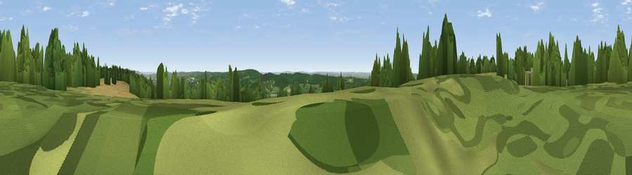

Betsom's Hill
#14828 in England · top 8% of its area beats it · near TatsfieldWhere it is
The exact computed spot (TQ 43593 56338). Click the marker for map links.
The view, rendered

A 360° render of this exact spot computed from the terrain model, tree cover and land cover — summer colours, afternoon light, calibrated against photographs of famous viewpoints. Real trees, hedges and buildings will differ in detail.
The panorama
Grey silhouette: terrain skyline in each direction (720 bearings, Earth curvature and refraction included). Dashed green: skyline with trees (+15 m) and buildings (+8 m) as obstacles. Blue strip: how far the ground is visible on each bearing.
Where the view opens
Wedge length = distance to the farthest visible ground on that bearing (vegetation-aware). Rings at 10, 25 and 50 km.
What fills the view
49% woodland · 33% grassland · 12% cropland · 6% built-up
Angular shares of the visible panorama (visual magnitude), not map area. Landscape diversity 0.50 (0–1 Shannon).
Key numbers
More beautiful places nearby
The staircase of upgrades: each row has a higher view potential than everything closer. Driving times are estimates from straight-line distance, calibrated against real road routing — check an actual route before setting out.
| Place | Direction | Drive | Score |
|---|---|---|---|
| Viewpoint near Tatsfield | W · 3 km | ~7 min | 61.0 |
| Viewpoint near Limpsfield | WSW · 4 km | ~10 min | 62.7 |
| Viewpoint near Limpsfield | WSW · 5 km | ~11 min | 66.0 |
| Viewpoint near Ide Hill | SE · 7 km | ~15 min | 67.9 |
| Viewpoint near Caterham Valley | WSW · 11 km | ~21 min | 68.0 |
| Viewpoint near Shipbourne | ESE · 14 km | ~25 min | 69.1 |
| Box Hill | W · 24 km | ~39 min | 70.4 |
| Viewpoint near Box Hill Village | W · 24 km | ~39 min | 71.0 |
51.28808, 0.05779 · source: osm peak · position refined by local search. Computed location — check access rights before visiting.